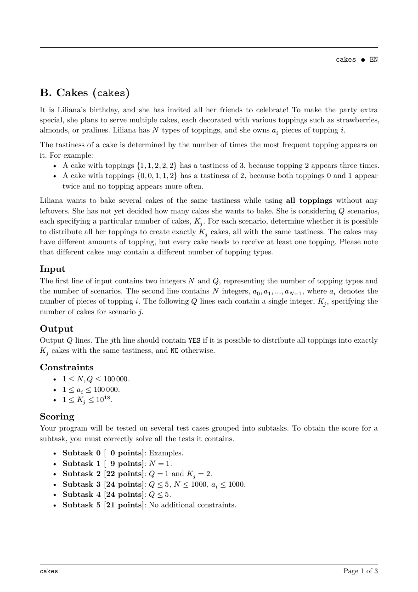
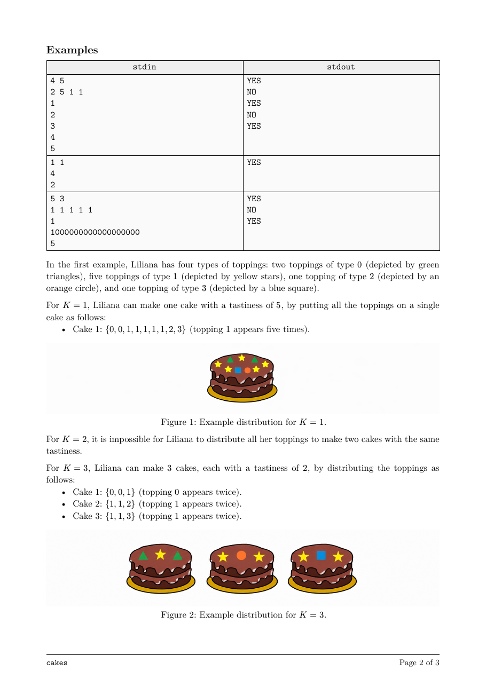
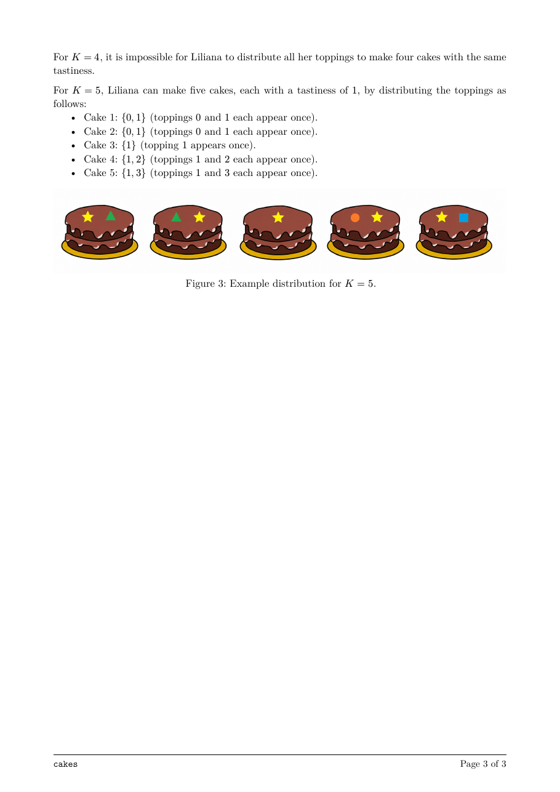

题面
来源：EGOI 2026 官方 PDF。模型收到的是由同一份 Typst 源文件转换的文字。



结果
Kimi K3.1 ProKimi
auto（max）
3/3
解出的采样 ↑
- 100采样 1 · 解出
- 100采样 2 · 解出
- 100采样 3 · 解出
- 7.5k平均输出 token（含思考） ↓
- 25.1输出速度 tokens/s ↑
- 262 秒延迟 ↓
DeepSeek Flash V4.1-1017DeepSeek
auto（high）
3/3
解出的采样 ↑
- 100采样 1 · 解出
- 100采样 2 · 解出
- 100采样 3 · 解出
- 12.2k平均输出 token（含思考） ↓
- 210.8输出速度 tokens/s ↑
- 57 秒延迟 ↓
MiniMax M3.1 FlashMiniMax
auto（max）
2/3
解出的采样 ↑
- 0.0采样 1 · 答案错误
- 100采样 2 · 解出
- 100采样 3 · 解出
- 10.8k平均输出 token（含思考） ↓
- 163.7输出速度 tokens/s ↑
- 53 秒延迟 ↓
↑ 越大越好，↓ 越小越好。得分 0–100，按官方时限判定，所有测试点都满分才算解出。CPU 时间 / 官方解为解出的答案在官方解最慢的 3 个测试点上的 CPU 时间之比（几何平均），只比较官方解至少需要 0.05 秒的题；复杂度按增长幂次相对官方解分类。判题与计分见 原理。
代码
Kimi K3.1 Pro · 采样 1 · 91 行
#include <bits/stdc++.h> using namespace std; using int64 = long long; int main() { ios::sync_with_stdio(false); cin.tie(nullptr); int N, Q; cin >> N >> Q; vector<int> a(N); int maxA = 0; for (int &x : a) { cin >> x; maxA = max(maxA, x); } vector<int> frequency(maxA + 1, 0); for (int x : a) { ++frequency[x]; } // atLeast[x] = number of topping types having at least x pieces. vector<int> atLeast(maxA + 2, 0); for (int x = maxA; x >= 1; --x) { atLeast[x] = atLeast[x + 1] + frequency[x]; } /* For a fixed tastiness t, exactly k cakes are possible iff: 1. k * t >= maxA, so every topping type fits within the per-cake limit of t pieces; 2. sum_i floor(a_i / t) >= k, allowing every cake to receive a designated group of t equal toppings. Thus, for this t, all feasible k form the interval [ceil(maxA / t), sum_i floor(a_i / t)]. */ vector<pair<int64, int64>> intervals; for (int t = 1; t <= maxA; ++t) { int64 fullGroups = 0; // floor(a/t) counts the positive multiples m*t not exceeding a. for (int multiple = t; multiple <= maxA; multiple += t) { fullGroups += atLeast[multiple]; } int64 lower = (maxA + t - 1) / t; if (lower <= fullGroups) { intervals.push_back({lower, fullGroups}); } } sort(intervals.begin(), intervals.end()); vector<pair<int64, int64>> merged; for (const auto &interval : intervals) { if (merged.empty() || interval.first > merged.back().second + 1) { merged.push_back(interval); } else { merged.back().second = max(merged.back().second, interval.second); } } while (Q--) { int64 k; cin >> k; size_t low = 0, high = merged.size(); while (low < high) { size_t mid = (low + high) / 2; if (merged[mid].first <= k) { low = mid + 1; } else { high = mid; } } bool possible = low > 0 && k <= merged[low - 1].second; cout << (possible ? "YES" : "NO") << '\n'; } return 0; }
Kimi K3.1 Pro · 采样 2 · 45 行
#include <bits/stdc++.h> using namespace std; int main() { ios::sync_with_stdio(false); cin.tie(nullptr); int N, Q; cin >> N >> Q; vector<int> a(N); int maxA = 0; for (int &x : a) { cin >> x; maxA = max(maxA, x); } vector<long long> freq(maxA + 2, 0), atLeast(maxA + 2, 0); for (int x : a) { ++freq[x]; } for (int x = maxA; x >= 1; --x) { atLeast[x] = atLeast[x + 1] + freq[x]; } // full[t] = sum_i floor(a_i / t) vector<long long> full(maxA + 1, 0); for (int t = 1; t <= maxA; ++t) { long long sum = 0; for (int multiple = t; multiple <= maxA; multiple += t) { sum += atLeast[multiple]; } full[t] = sum; } while (Q--) { long long K; cin >> K; long long t = maxA / K + (maxA % K != 0); cout << (full[static_cast<int>(t)] >= K ? "YES" : "NO") << '\n'; } return 0; }
Kimi K3.1 Pro · 采样 3 · 51 行
#include <bits/stdc++.h> using namespace std; int main() { ios::sync_with_stdio(false); cin.tie(nullptr); int N, Q; cin >> N >> Q; vector<int> a(N); int maxA = 0; for (int &x : a) { cin >> x; maxA = max(maxA, x); } vector<int> freq(maxA + 1, 0); for (int x : a) { ++freq[x]; } // atLeast[x] = number of topping types with at least x pieces. vector<int> atLeast(maxA + 2, 0); for (int x = maxA; x >= 1; --x) { atLeast[x] = atLeast[x + 1] + freq[x]; } // fullGroups[t] = sum_i floor(a_i / t). vector<long long> fullGroups(maxA + 1, 0); for (int t = 1; t <= maxA; ++t) { long long total = 0; for (int x = t; x <= maxA; x += t) { total += atLeast[x]; } fullGroups[t] = total; } while (Q--) { long long K; cin >> K; // The smallest tastiness that can accommodate the largest topping type. long long t = (static_cast<long long>(maxA) + K - 1) / K; // fullGroups is non-increasing, so it suffices to test this smallest t. cout << (fullGroups[t] >= K ? "YES" : "NO") << '\n'; } return 0; }
DeepSeek Flash V4.1-1017 · 采样 1 · 50 行
#include <bits/stdc++.h> using namespace std; int main() { ios::sync_with_stdio(false); cin.tie(nullptr); int N, Q; cin >> N >> Q; vector<int> a(N); int M = 0; for (int i = 0; i < N; ++i) { cin >> a[i]; M = max(M, a[i]); } vector<int> freq(M + 1, 0); for (int x : a) freq[x]++; vector<long long> cntGE(M + 2, 0); for (int v = M; v >= 1; --v) { cntGE[v] = cntGE[v + 1] + freq[v]; } vector<long long> F(M + 1, 0); for (int t = 1; t <= M; ++t) { long long sum = 0; for (int m = t; m <= M; m += t) { sum += cntGE[m]; } F[t] = sum; } while (Q--) { long long K; cin >> K; long long t = (M + K - 1) / K; if (F[t] >= K) { cout << "YES\n"; } else { cout << "NO\n"; } } return 0; }
DeepSeek Flash V4.1-1017 · 采样 2 · 56 行
#include <bits/stdc++.h> using namespace std; int main() { ios::sync_with_stdio(false); cin.tie(nullptr); int N, Q; cin >> N >> Q; vector<int> a(N); int M = 0; long long total = 0; for (int i = 0; i < N; ++i) { cin >> a[i]; M = max(M, a[i]); total += a[i]; } vector<long long> cnt(M + 2, 0); for (int x : a) cnt[x]++; vector<long long> ge(M + 3, 0); for (int x = M; x >= 1; --x) { ge[x] = ge[x + 1] + cnt[x]; } vector<long long> F(M + 2, 0); for (int t = 1; t <= M; ++t) { long long cur = 0; for (int v = t; v <= M; v += t) { cur += ge[v]; } F[t] = cur; } vector<long long> best(M + 3, 0); for (int t = M; t >= 1; --t) { best[t] = max(best[t + 1], F[t]); } while (Q--) { long long K; cin >> K; long long L = (M - 1LL) / K + 1LL; bool ok = (K <= total && best[L] >= K); cout << (ok ? "YES\n" : "NO\n"); } return 0; }
DeepSeek Flash V4.1-1017 · 采样 3 · 83 行
#include <bits/stdc++.h> using namespace std; int main() { ios::sync_with_stdio(false); cin.tie(nullptr); int N, Q; cin >> N >> Q; vector<int> a(N); int A = 0; for (int i = 0; i < N; ++i) { cin >> a[i]; A = max(A, a[i]); } vector<int> freq(A + 2, 0); for (int x : a) freq[x]++; vector<int> ge(A + 3, 0); for (int x = A; x >= 1; --x) { ge[x] = ge[x + 1] + freq[x]; } // B[T] = sum floor(a_i / T) vector<long long> B(A + 1, 0); for (int T = 1; T <= A; ++T) { long long sum = 0; for (int m = T; m <= A; m += T) { sum += ge[m]; } B[T] = sum; } vector<pair<long long, long long>> intervals; for (int T = 1; T <= A; ++T) { long long L = (A + T - 1LL) / T; long long R = B[T]; if (L <= R) { intervals.push_back({L, R}); } } sort(intervals.begin(), intervals.end()); vector<pair<long long, long long>> merged; for (auto [l, r] : intervals) { if (merged.empty() || l > merged.back().second + 1) { merged.push_back({l, r}); } else { merged.back().second = max(merged.back().second, r); } } while (Q--) { long long K; cin >> K; int lo = 0, hi = (int)merged.size() - 1; int idx = -1; while (lo <= hi) { int mid = (lo + hi) / 2; if (merged[mid].first <= K) { idx = mid; lo = mid + 1; } else { hi = mid - 1; } } bool ok = false; if (idx != -1 && K <= merged[idx].second) { ok = true; } cout << (ok ? "YES\n" : "NO\n"); } return 0; }
MiniMax M3.1 Flash · 采样 1 · 49 行
#include <bits/stdc++.h> using namespace std; int main() { ios::sync_with_stdio(false); cin.tie(nullptr); int N, Q; cin >> N >> Q; constexpr int MAX_A = 100000; vector<int> freq(MAX_A + 2, 0); int A = 0; for (int i = 0; i < N; ++i) { int x; cin >> x; ++freq[x]; A = max(A, x); } // suffix[x] = number of topping types having at least x pieces. vector<int> suffix(A + 2, 0); for (int x = A; x >= 1; --x) { suffix[x] += suffix[x + 1]; } // blocks[t] = sum floor(a_i / t). // Each such block can provide the required tastiness t to one cake. vector<long long> blocks(A + 1, 0); for (int t = 1; t <= A; ++t) { for (int multiple = t; multiple <= A; multiple += t) { blocks[t] += suffix[multiple]; } } while (Q--) { long long K; cin >> K; // The largest topping type must fit into K cakes, // so the common tastiness must be at least ceil(A / K). int t = static_cast<int>((A - 1) / K + 1); cout << (blocks[t] >= K ? "YES\n" : "NO\n"); } return 0; }
MiniMax M3.1 Flash · 采样 2 · 46 行
#include <bits/stdc++.h> using namespace std; int main() { ios::sync_with_stdio(false); cin.tie(nullptr); int N, Q; cin >> N >> Q; vector<int> a(N); int M = 0; for (int &x : a) { cin >> x; M = max(M, x); } // ge[v] = number of topping types having at least v pieces. vector<int> ge(M + 2, 0); for (int x : a) { ++ge[x]; } for (int v = M; v >= 1; --v) { ge[v] += ge[v + 1]; } // groups[t] = sum floor(a[i] / t). vector<long long> groups(M + 1, 0); for (int t = 1; t <= M; ++t) { for (int multiple = t; multiple <= M; multiple += t) { groups[t] += ge[multiple]; } } while (Q--) { long long K; cin >> K; // Smallest possible common tastiness for K cakes. long long t = M / K + (M % K != 0); cout << (groups[static_cast<int>(t)] >= K ? "YES\n" : "NO\n"); } return 0; }
MiniMax M3.1 Flash · 采样 3 · 48 行
#include <bits/stdc++.h> using namespace std; int main() { ios::sync_with_stdio(false); cin.tie(nullptr); int N, Q; cin >> N >> Q; vector<int> a(N); int M = 0; for (int &x : a) { cin >> x; M = max(M, x); } // suffix[v] = number of topping types having at least v pieces. vector<int> suffix(M + 2, 0); for (int x : a) { ++suffix[x]; } for (int v = M; v >= 1; --v) { suffix[v] += suffix[v + 1]; } // F[t] = sum_i floor(a[i] / t). vector<long long> F(M + 1, 0); for (int t = 1; t <= M; ++t) { for (int multiple = t; multiple <= M; multiple += t) { F[t] += suffix[multiple]; } } while (Q--) { long long K; cin >> K; // Minimum possible common tastiness: // t >= ceil(M / K). long long t = static_cast<long long>(M) / K + (static_cast<long long>(M) % K != 0); cout << (F[static_cast<int>(t)] >= K ? "YES\n" : "NO\n"); } return 0; }